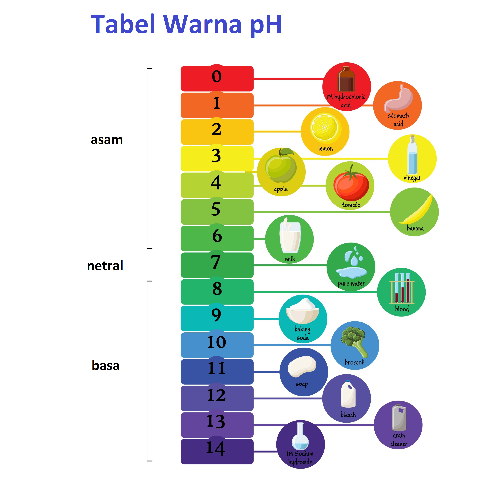

Peta Warna pH

Gelas Eksperimen
KOSONG
Volume: 0 ml
Angka pH: 7.0

Taman Numerasi BBGTK D.I. Yogyakarta
Ayo bantu Ibu cek tingkat keasaman bahan makanan di dapur! Caranya mudah: Tarik dan susun blok kode dari pilihan bahan di bagian atas ke halaman editor. Lihat bagaimana warna cairan di gelas berubah secara otomatis sesuai dengan ramuan yang kamu buat!